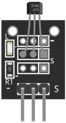

|  |
|
| The KY-003 Hall Magnetic Sensor consists of a 3144EUA-S sensitive Hall-effect switch for high-temperature operation, a 680Ω resistor and a LED. Compatible with popular electronics platforms like Arduino and Raspberry Pi. |
Codeint led = 13;//LED pin int sensor = 3; //sensor pin int val; //numeric variable void setup() { pinMode(led, OUTPUT); //set LED pin as output pinMode(sensor, INPUT); //set sensor pin as input } void loop() { val = digitalRead(sensor); //Read the sensor if(val == LOW) //when magnetic field is detected, turn led on { digitalWrite(Led, HIGH); } else { digitalWrite(Led, LOW); } } |
| Source |